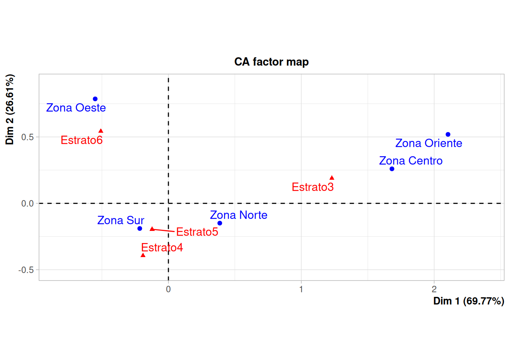

Ejemplo
Modelos Estadísticos para la toma de decisiones
Para ilustrar los pasos para realizar un análisis de correspondencia se toma una muestra de la base de datos vivienda contenida en paqueteMOD
set.seed(1234)
vivienda.24 <- sample_n(vivienda24, 4000)vivienda.24$estrato <- as.factor(vivienda.24$estrato)Inicialmente se revisa si la base tiene datos faltantes
library(mice)
md.pattern(vivienda.24, rotate.names = TRUE)
La muestra seleccionada contiene un registro con datos faltantes para ambas variables, de tal forma que se procede a eliminarlas, para posteriormente constatar que se han eliminado se utiliza la función md.pattern del paquete mice
library(mice)
vivienda.24 <- na.omit(vivienda.24)
grafico <-md.pattern(vivienda.24, rotate.names = TRUE)
Se construye entonces una tabla cruzada con las variables involucradas en el análisis :
- Zona : Centro, Norte, Oeste, Oriente, Sur
- Estrato : 3,4,5,6
library(FactoMineR)
tabla <- table(vivienda.24$zona, vivienda.24$estrato)
tabla
3 4 5 6
Zona Centro 46 8 2 1
Zona Norte 279 194 382 86
Zona Oeste 26 41 126 358
Zona Oriente 178 3 1 0
Zona Sur 186 798 781 503chisq.test(tabla)
Pearson's Chi-squared test
data: tabla
X-squared = 1868.9, df = 12, p-value < 2.2e-16El resultado indica que se rechaza la hipótesis de independencia de las variables (p-value: 0.0000), indicando grado tipo de relación entre ellas.
Finalmente se procede a realizar el análisis de correspondencia que consistes en estimar las coordenadas para cada uno de los niveles de ambas variables y representarlas en un plano cartesiano
library(FactoMineR)
library(factoextra)
library(gridExtra)
resultados_ac <- CA(tabla)
El gráfico nos permite establecer relaciones y validarlas como son:
- El estrato 6 se encuentra ubicado en la Zona Oeste
- Los estratos 4 y 5 están ubicados principalmente en la Zona Sur y Norte
- El estrato 3 está presente en las Zonas Oriente y Centro
valores_prop <-resultados_ac$eig ; valores_prop eigenvalue percentage of variance cumulative percentage of variance
dim 1 0.32546174 69.642130 69.64213
dim 2 0.12761381 27.306734 96.94886
dim 3 0.01425901 3.051136 100.00000fviz_screeplot(resultados_ac, addlabels = TRUE, ylim = c(0, 80))+ggtitle("")+
ylab("Porcentaje de varianza explicado") + xlab("Ejes")Los resultados indican que la primera componente resumen el 68.9% y los dos primeros componentes prepresentados en el plano factorial, mientras que los dos primeros ejes resumen un 96.4% de los datos.
Código
library(paqueteMOD)
data(vivienda)
vivienda.24 <- vivienda[, c(2,4)]
library(dplyr)
set.seed(1234)
vivienda.24 <- sample_n(vivienda.24, 4000)
md.pattern(vivienda.24, rotate.names = TRUE)
library(mice)
library(FactoMineR)
vivienda.24 <- na.omit(vivienda.24)
tabla <- table(vivienda.24$zona, vivienda.24$estrato)
resultados_ac <- CA(tabla)
valores_prop <-resultados.ac$eig
library(factoextra)
fviz_screeplot(resultados_ac, addlabels = TRUE, ylim = c(0, 80))+ggtitle("")+
ylab("Porcentaje de varianza explicado") + xlab("Ejes")